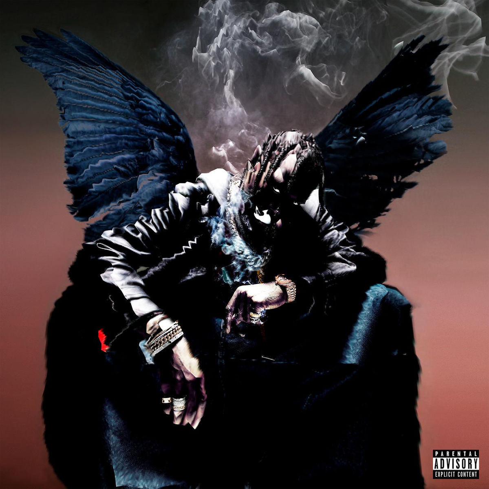

THE COSMOS OF JAYLEN VOSS
Born in the sprawling dust of Houston, Jaylen Voss didn't just find a sound—he captured an atmosphere. His early years were a raw experiment, blending the isolation of the desert with the rhythmic pulse of the city's underground scene.
The evolution was inevitable. Voss moved beyond traditional boundaries, fusing industrial textures with psychedelic echoes. It’s a sonic journey that defies the status quo, creating a new reality where the raw meets the refined.
The epicenter of the sound. Where the desert heat meets the industrial pulse of the city.
A fusion of distorted low-ends, analog synthesizers, and atmospheric soundscapes.
Utilizing vintage hardware to create the raw, unrefined textures of the future.
Currently exploring the boundaries of human consciousness through digital audio.
Inspired by the rebellious spirit of 70s Rock and the precision of modern Hip-Hop.
Jaylen retreats to the Texas outskirts, recording the first echoes of what would become the 'Astraea' sound. Minimal gear, raw emotion.
Global recognition follows the release of 'Digital Dust'. The underground scene in Houston explodes into the mainstream consciousness.
Sold-out stadium tours and the establishment of the Apollo collective. Voss becomes a visual architect as much as a sonic one.
A cinematic journey into the unknown. DAYS BEFORE RODEO represents the pinnacle of digital psychedelia, blending distorted low-ends with ethereal vocals. It is the definitive sound of the modern era.

The breakthrough project. Recorded entirely in isolation, this album introduced the world to the 'Desert-Industrial' sound. A raw exploration of fame, loneliness, and heavy synthesizers.

The roots. A minimalist mixtape that captured the underground scene of Houston. Low-fidelity recordings meeting high-concept lyricism. The origin of the legend.